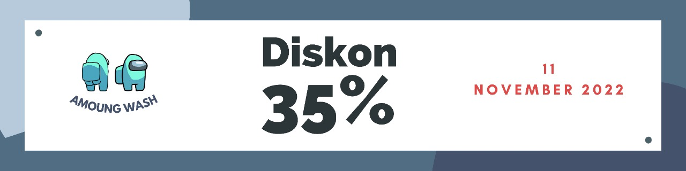
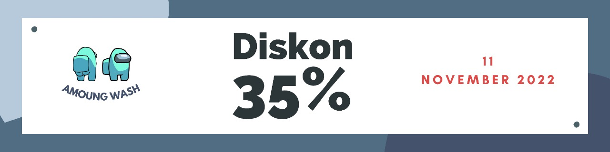
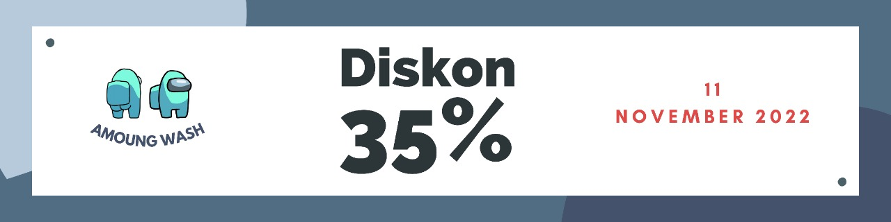
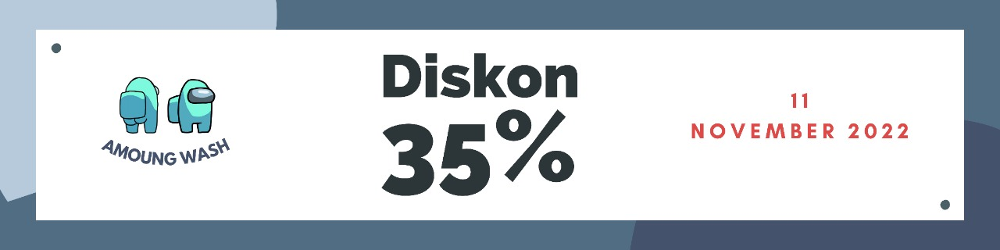

Di masa Pandemi yang sudah semakin membaik, Aktivitas kerja dan diluar rumah semakin sering dilakukan dan tidak sedikit pula yang tidak memiliki waktu yang cukup untuk membersihkan dan merapikan pakaian. Sehingga dengan adanya Laundry kita akan semakin terbantu. Akan tetapi jasa laundry khususnya di surabaya sudah semakin berkembang dan banyak ditemui. Kita tentunya harus lebih cermat dalam memilih jasa laundry yang berkualitas dan sesuai dengan kebutuhan kita.
Pasalnya ada baju-baju yang kita titipkan disana, dan tidak sedikit baju-baju itu adalah baju favorit, baju kenangan yang memang memiliki cerita tersendiri. Pastinya kita berharap jasa laundry yang kita selain mampu membersihkan baju juga cepat selesai, apalagi bagi para pegawai kantoran yang sibuk dan butuh penyelesaian yang cepat tentunya ini menjadi perhatian bagi mereka. Maka dari itu kita harus bisa memilih Laundry yang tepat.
Salah satu jasa Laundry yang bisa menjadi rekomendasi terutama di wilayah surabaya adalah Laundry Holic Surabaya. Berlokasi di daerah Pacar Kembang Surabaya, kami Hadir dimasa Pandemi untuk membantu menyelesaikan masalah laundry anda dengan cepat serta ringan dikantong. Terdapat berbagai layanan yang kami sediakan diantaranya adalah dry clean untuk semua pakaian seperti baju manten, jas, jaket, gaun. Selain pakaian kami juga menyediakan layanan untuk laundry sprei, bedcover, boneka dengan segala ukuran, stroller, tikar, karpet, kasur, baju badut, sepatu, tas helm dll.
Dibawah naungan Asosiasi Laundry Indonesia, Laundry Holic Surabaya memiliki standart dan mutu pelayanan yang lebih teruji dan terpercaya, yang sudah memenuhi syarat Berlaku. Info lebih lanjut seputar pemesanan anda bisa hubungi Customer Service Kami.